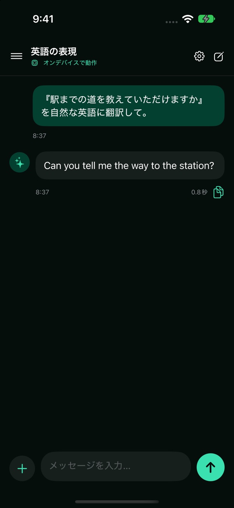
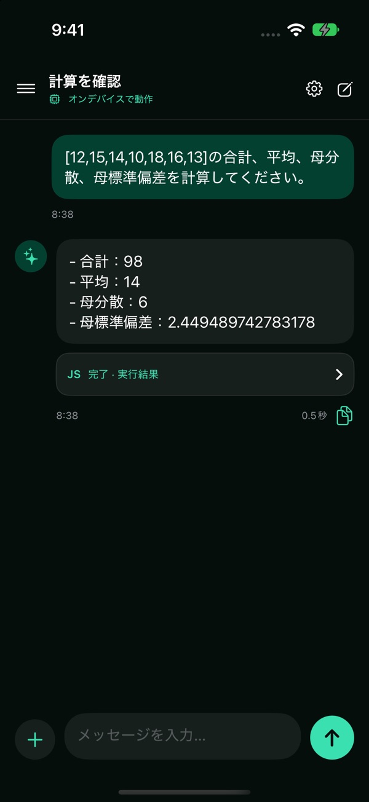
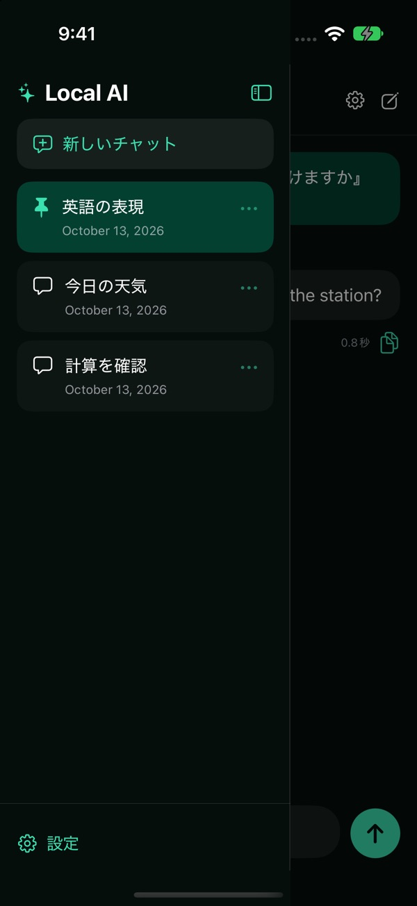

端末内で会話
Apple Intelligenceのモデルで回答します。会話と添付は端末に保存され、端末バックアップの対象になります。
Apple Intelligenceを使うAIチャット
Local AIは、Apple Intelligenceを使って端末内で回答するAIチャットです。モデルの準備後は、機内モードでも会話と計算を使えます。

特徴
Apple Intelligenceのモデルで回答します。会話と添付は端末に保存され、端末バックアップの対象になります。
JavaScriptを端末内で実行して計算できます。実行環境からネットワークやファイルにはアクセスできません。
画像・PDF・テキストなどを添付。会話のピン留め、タイトル編集、削除にも対応します。
はじめて使う方へ
iOS 27以上でApple Intelligenceが使えるiPhone・iPadが必要です。非対応端末ではチャットを利用できません。
端末の設定でApple Intelligenceを有効にし、モデルの準備を完了してください。
準備後はオフラインで利用できます。生成中はアプリを前面に表示してください。


iOS 27以上に加え、Apple Intelligenceが利用できる端末・設定が必要です。OSの条件だけを満たしても、非対応端末ではチャットを利用できません。
画像、PDF、TXT、MD、CSV、TSV、JSON、LOGに対応します。1回5件、各20MB、合計60MBまでです。Office文書・HTML・音声・動画には対応していません。
モデルの対応状況によって異なります。画像理解に未対応の場合は、画像内の文字の読み取りのみ行います。
バックグラウンドに移動すると生成を停止します。生成中はアプリを前面に表示してください。
誤りが含まれる場合があります。重要な情報は出典などで確認してください。Web検索にはインターネット接続が必要です。